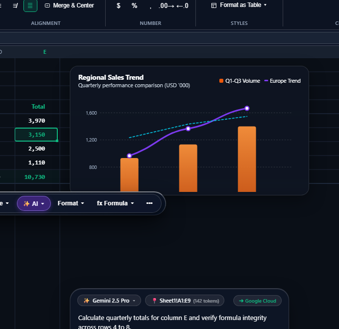

TZWorkQuint User Guide & Documentation
Welcome to TZWorkQuint (Version 3.0.0), a high-performance desktop productivity and engineering suite developed by TZLabs (https://tzlabs.in) for Windows x86_64.
At a Glance: The Five Suite Applications
- TZ CellForge (Spreadsheet) — Ultra-responsive formula evaluation, bounded charting, transactional AI edits with full undo.
- TZ Wordloom (Document Processor) — Clean typography, page canvas, styles, and high-fidelity DOCX export.
- TZ PDFlex (PDF Markup & Editor) — Fast PDF rendering, page insertion/deletion/reordering, vector annotations, and digital signature verification.
- TZ Draftline (2D CAD Drafting) — Precise geometric entities, snap engines, DXF import/export, and coordinate command lines.
- TZ SlideSpark (Presentation Decks) — Slide deck choreography, layout templates, rich shapes, transitions, and presenter view.

Figure 1.1: Standardized Help ▸ About dialog across all suite applications.
Complete 3.0.0 User Manual & Feature Reference (Markdown)
The authoritative, release-verified documentation suite is maintained in Markdown with high-resolution relative image links:
| Chapter | Document File | Scope & Topic |
|---|---|---|
| Index | README.md | Master User Manual index, architecture map, and sitemap. |
| 00 | 00_build_and_system.md | Environment, release hashes, launch paths, file associations, coexistence. |
| 01 | 01_hub_guide.md | TZWorkQuint Hub launcher, card grid, search, filters, appearance. |
| 02 | 02_wordloom_guide.md | TZ Wordloom word processing, styles, tracking, Word 2024 parity. |
| 03 | 03_cellforge_guide.md | TZ CellForge spreadsheets, formulas, PivotTables, Excel 2024 parity. |
| 04 | 04_slidespark_guide.md | TZ SlideSpark presentations, 6 starters, Presenter View, PPTX 2024 parity. |
| 05 | 05_pdflex_guide.md | TZ PDFlex PDF markup, AcroForms, verified zero-leak permanent redaction. |
| 06 | 06_draftline_guide.md | TZ Draftline 2D CAD drafting, CLI aliases, Osnap, layers, DXF export. |
| 07 | 07_using_tz_assistant.md | TZ Assistant copilot, gateway setup, scoped context, 5 worked examples. |
| 08 | 08_customization_and_themes.md | Optical materials (Pearl, Smoked, Glass Off), reduced motion, presets. |
| 09 | 09_templates_and_fonts.md | Templates (.dotx, .xltx, .potx, .dwt), Aptos CloudFonts discovery, OFL fonts. |
| 10 | 10_troubleshooting.md | Disabled commands, missing tabs, 1040x760 scaling, recovery journals. |
QA & Documentation Verification Artifacts
Inspection Records (under
artifacts/documentation-verification/)- coverage.csv — 2,035 inventoried commands & options across all 6 applications.
- replay-checklist.md — App-by-app step-by-step verification procedures.
- gaps-log.md — Audited product defects and divergences (Source vs UI vs Executed).
- handoff-note.md — Verification summary for independent inspectors.
Core Principles
- Local-First & Private: Your files never leave your machine unless you explicitly configure and invoke an external AI connection.
- Strictly Factual & Purpose-Built: Pure native Rust/egui implementations with direct DirectX 12 hardware acceleration.
- Consistent User Interface: Familiar ribbons, classic menubars, and liquid glass floating tool docks designed for 100%, 125%, and 150% Windows DPI scaling.